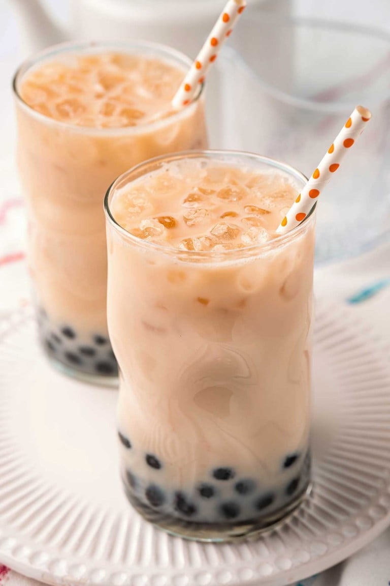

Home
Milk Tea Recipe

Description:
A tasty and simple beverage!
Popular to have with boba, you can find this at many Japanese inspired restuarants, and now you'll be able to make it at home.
Ingredients:
- 1-2 cups water
- 1/2-1 milk
- 2 Black Tea bags
- 4 tablespoons sugar
Recipe:
- Boil the 1-2 cups of water.
- Steep the 2 Black Tea bags in the now-boiled water.
- Mix in the 4 tablespoons of sugar, stirr well.
- Pour in the 1/2-1 cup milk
- Enjoy!